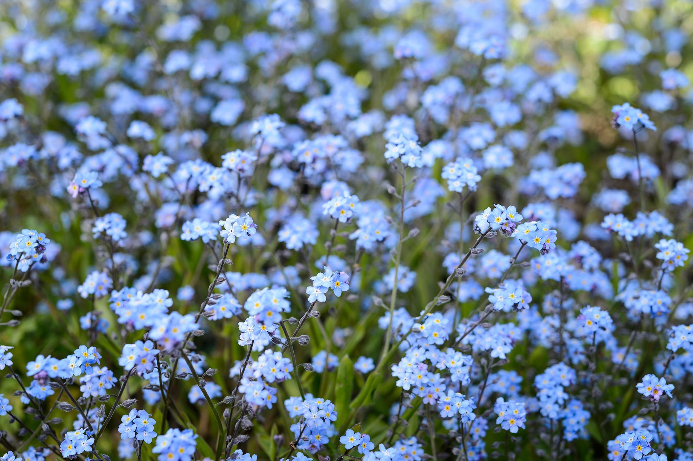
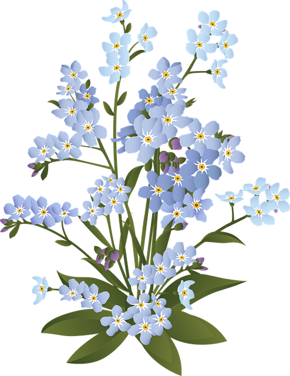

Myosotis (/ˌmaɪəˈsoʊtɪs/ MY-ə-SOH-tiss[2]) is a genus of flowering plants in the family Boraginaceae. The name comes from the Ancient Greek μυοσωτίς "mouse's ear", which the foliage is thought to resemble.[3] In the Northern Hemisphere,[citation needed] they are colloquially known as forget-me-nots or scorpion grasses. Myosotis alpestris is the official flower of Alaska[4] and Dalsland, Sweden. Plants of the genus are not to be confused with Chatham Islands' forget-me-nots, which belong to the related genus Myosotidium.
